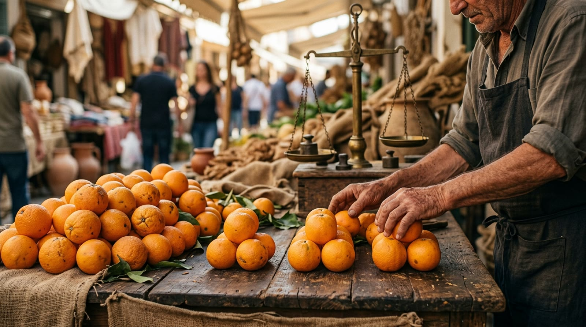
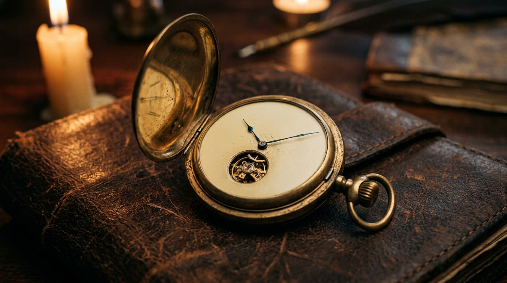
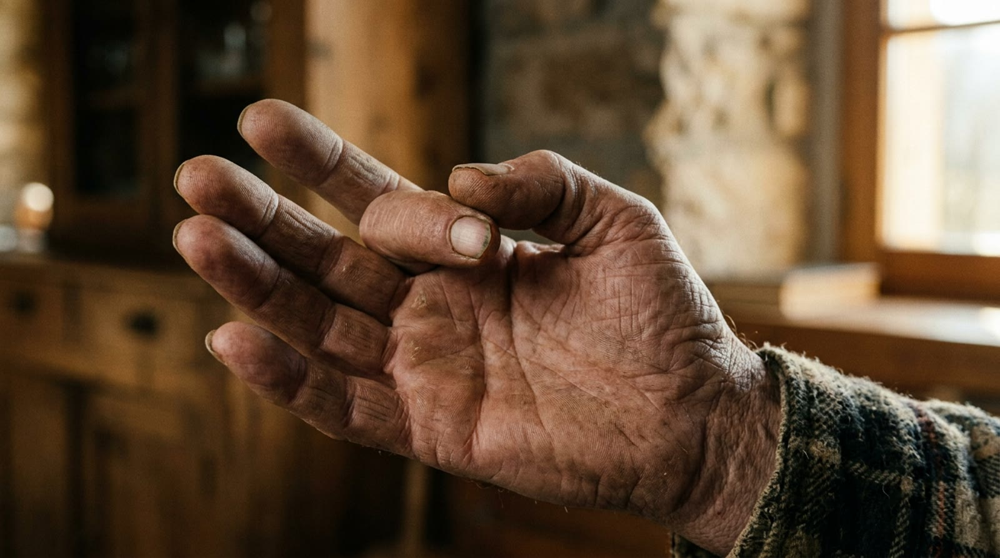
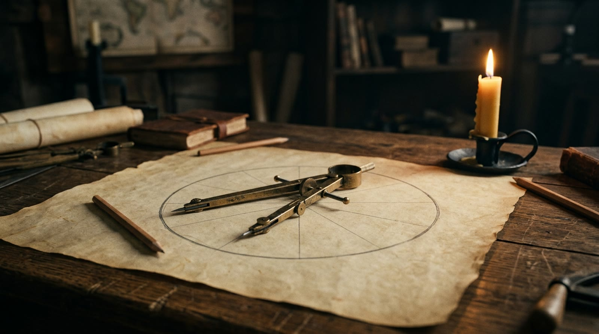

extra 06 · fora da linha do tempo
O Sistema de 60
Toda vez que você lê as horas está contando num grupo de sessenta — e nem percebe. Este extra mostra de onde esse grupo estranho veio, por que ele sobreviveu milhares de anos e o que o relógio tem de conta armada. Avance apertando Próximo.
a pergunta · por que logo sessenta?
O número amigo de dividir

reconstituição realista · não é fotografia de época
a escrita · sem sessenta desenhos
Cada casa é um compartimento

é um sistema dentro do outro: casas de sessenta, escritas em algarismos de dez — e funciona
demonstração · o vai-um dos sessenta
Deixa o relógio contar
Aperte começar (acelerado: cada piscada é um segundo) e repare no vai-um dos sessenta.
0:00
0
em 59:59 as duas casas estão cheias: o próximo segundo derruba tudo de uma vez — 1:00:00, a mesma cascata do 99 pra 100
a mão que conta · doze ossinhos
Sessenta numa mão só

reconstituição realista · não é fotografia de época
demonstração · dividir sem sobra
Reparta os sessenta
Escolha por quantos dividir e repare na sobra.
troque pra 100 e divida por 3 ou por 6: fica pedrinha na mão — a sobra é briga na feira, e o sessenta quase nunca briga
o irmão do sessenta · o círculo
Trezentos e sessenta graus

reconstituição realista · não é fotografia de época
demonstração · lendo o relógio como número
O 2:35 por dentro
Quantos segundos tem 2:35? Aperte lê e desmonte o relógio.
2:35
a casa dos minutos multiplica por sessenta, a dos segundos conta os soltos: casa multiplica, algarismo conta — como em qualquer base
sua vez · três tempos
Monte o tempo
Monte o tempo com os botões.
0:00
0
o 65 mostra que 1:05 não é 105; o 600 deixa a casa dos segundos vazia — dez minutos cravados, e o vazio de novo é informação
o fecho · o sobrevivente
Sessenta é o grupo que reparte
onde ele vive
No tempo (60 segundos, 60 minutos) e nos ângulos (360 graus). Sobreviveu milhares de anos porque dividir bem importa mais ali do que escrever curto — hora, mapa e círculo vivem sendo repartidos.
o preço
Sessenta desenhos ninguém decora: cada casa se escreve com DOIS algarismos de dez e uma parede no meio (2:35). É um sistema dentro do outro — e funciona há muito tempo.
onde a analogia quebra
O relógio não é outra matemática: é o mesmo encheu, sobe um com grupo de sessenta. E ele para nas horas — dali pra cima o grupo muda (24 horas, 7 dias, 12 meses): o dia a dia mistura bases sem pedir licença. Qual grupo ganha depende do que se precisa: repartir, encurtar… ou só ligar e desligar. Rende outra conversa.